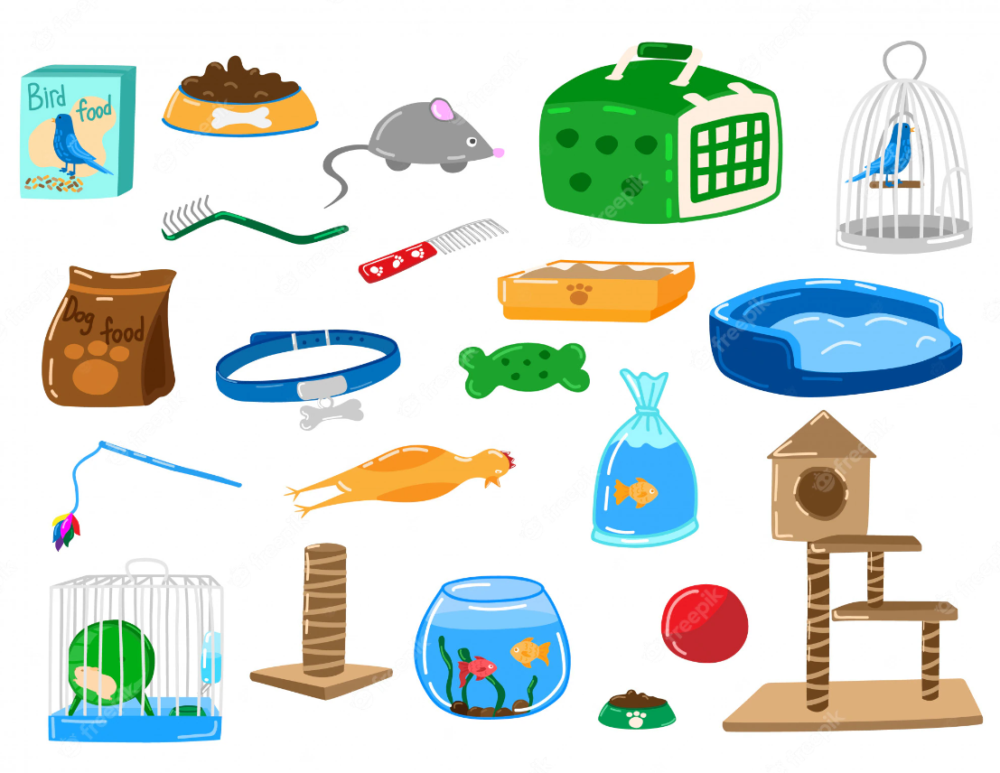

"En nuestra tienda de mascotas, entendemos que la diversión es parte fundamental de la vida de tus adorables compañeros. Por eso, ofrecemos una emocionante colección de juguetes diseñados para estimular la mente y mantener activos a tus amigos peludos. Desde pelotas reboteadoras y juguetes interactivos hasta peluches suaves y resistentes, tenemos una amplia selección para satisfacer los gustos de todos los tipos de mascotas. Nuestros juguetes están hechos de materiales seguros y duraderos para garantizar horas de entretenimiento y alegría. ¡Ven y descubre cómo hacer que la vida de tus mascotas sea aún más emocionante!"
